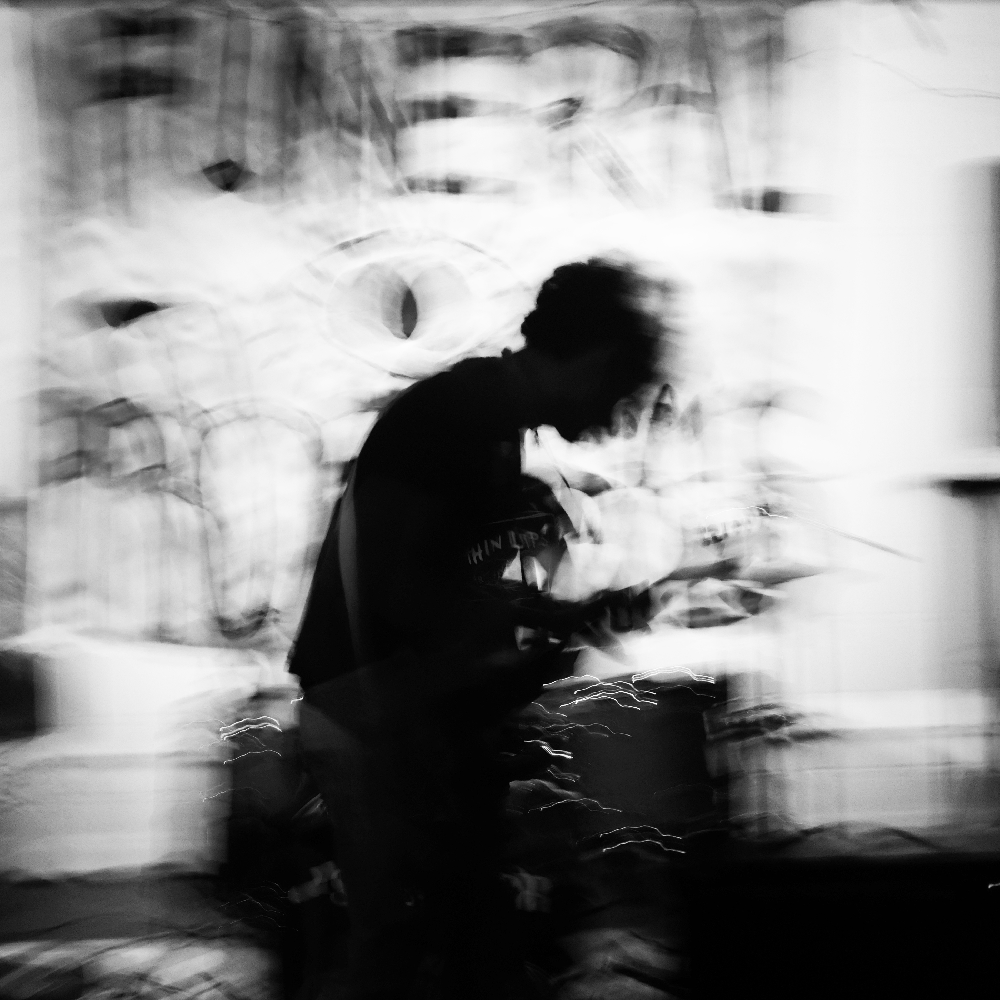

"Motion Blur Study #5"
Digital Photography // 2019 // Louisville, Kentucky
This is a photograph I made during the last performance of Winston on Wheels, a Louisville band I'd gotten very close to over the years. I started in concert photography, shooting local acts almost every weekend, but I was particularly close to these guys. Their last show was probably the best performance I'd ever seen from them, and since there were several other photographers there I figured I could afford to have some fun. I'd been reading about Ernst Haas a lot then, so I thought I'd try dragging my shutter even when there was enough light to avoid it. I do that a lot now. It's ok to make an imperfect photograph.